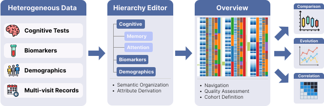

Abstract
Background and Objective: Neuropsychological
assessments are widely used to monitor cognitive change and
investigate progression from mild cognitive impairment (MCI) to
dementia. However, exploratory analysis of longitudinal test batteries
is often hindered by fragmented workflows that rely on spreadsheets,
static plots, and ad hoc scripts, which limit reproducibility,
iterative cohort refinement, trajectory inspection, and multivariate
reasoning. This work presents VIANNA (VIsual ANalytics for
Neuropsychological Assessments), an interactive visual analytics
framework designed to support exploratory analysis of longitudinal
neuropsychological data.
Methods: Based on a task-oriented design process, our tool integrates (1) an interactive hierarchy editor for semantic attribute organization, dimensionality reduction, and transparent attribute derivation; (2) an overview workspace for data exploration, curation, and selection; and (3) coordinated analytical components supporting cohort comparison, longitudinal trajectory analysis, and correlation exploration.
Results: We demonstrate our tool using the multi-visit AI-Mind dataset, illustrating how interactive visual analytics can support structured data exploration, data curation, cohort-based comparisons, and hypothesis generation in complex neuropsychological datasets within a unified interactive environment.
Conclusions: VIANNA provides a domain-specific visual analytics framework for exploratory longitudinal neuropsychological analysis. By integrating semantic attribute management, overview-driven cohort definition, and coordinated downstream analytical views, it helps address the complexity of high-dimensional multi-visit neuropsychological datasets.
Methods: Based on a task-oriented design process, our tool integrates (1) an interactive hierarchy editor for semantic attribute organization, dimensionality reduction, and transparent attribute derivation; (2) an overview workspace for data exploration, curation, and selection; and (3) coordinated analytical components supporting cohort comparison, longitudinal trajectory analysis, and correlation exploration.
Results: We demonstrate our tool using the multi-visit AI-Mind dataset, illustrating how interactive visual analytics can support structured data exploration, data curation, cohort-based comparisons, and hypothesis generation in complex neuropsychological datasets within a unified interactive environment.
Conclusions: VIANNA provides a domain-specific visual analytics framework for exploratory longitudinal neuropsychological analysis. By integrating semantic attribute management, overview-driven cohort definition, and coordinated downstream analytical views, it helps address the complexity of high-dimensional multi-visit neuropsychological datasets.

Modular architecture of VIANNA. The system follows a coordinated multiple-view design integrating hierarchical feature construction, overview-based cohort definition, and task-specific analytical components.
Key Features
Hierarchical Attribute Management
Transparent and expert-guided feature derivation and dimensionality reduction.
Transparent and expert-guided feature derivation and dimensionality reduction.
Cohort-Based Comparison
Effect-size-driven ranking of group differences beyond p-values.
Effect-size-driven ranking of group differences beyond p-values.
Longitudinal Trajectory Analysis
Integrated visualization and inference for repeated measures.
Integrated visualization and inference for repeated measures.
Correlation & Multivariate Exploration
Coordinated matrix, scatterplot, and PCA-based views.
Coordinated matrix, scatterplot, and PCA-based views.
Demo Video
Funding
This work has received funding from the European Union's Horizon 2020 research and innovation programme under grant agreement No. 964220. This paper reflects only the authors' view and the Commission is not responsible for any use that may be made by the information it contains.